Bem-vindo ao Biossegurança na Prática
Uma plataforma educativa, que promove o conhecimento sobre segurança em ambientes laboratoriais. Nosso objetivo é orientar estudantes, professores e profissionais da saúde e da educação quanto às boas práticas de biossegurança.
Sobre
Informações sobre o projeto
O que é o projeto?
O site Biossegurança na Prática é fruto de um trabalho de conclusão do Curso de Licenciatura em Ciências Biológicas, desenvolvido pela estudante Fabiana Trindade Amorim e pelos professores Dr.ª Aureluci Alves de Aquino e Me.º Reinaldo Monteiro Cotrim, no IF Baiano, Campus Guanambi. A ideia surgiu a partir de uma pesquisa aplicada sobre a contaminação microbiológica em superfícies inativas de laboratórios da cidade de Guanambi (BA), sendo observada, então, a necessidade de transformar os resultados obtidos em material educativo acessível, claro e útil para a comunidade escolar e científica.
Este espaço digital foi criado com o propósito de orientar estudantes, professores e profissionais da saúde e da educação quanto às boas práticas de biossegurança, oferecendo informações fundamentadas em evidências científicas, atualizadas e de fácil acesso. Por meio dele, buscamos ampliar o alcance do conhecimento, contribuir para a melhoria das práticas laboratoriais e fomentar uma cultura de cuidado e responsabilidade coletiva nos ambientes de ensino e pesquisa. O site foi idealizado para atender a diferentes perfis de usuários, que atuam direta ou indiretamente em laboratórios. Entre eles:
- Estudantes do ensino médio e superior, especialmente das áreas da saúde, ciências e educação;
- Professores e pesquisadores que utilizam laboratórios como espaços pedagógicos ou científicos;
- Profissionais de laboratórios clínicos, de análises e de pesquisa;
O conteúdo aqui disponível pode ser utilizado tanto como ferramenta de apoio pedagógico, quanto como material de capacitação e atualização profissional. Nosso compromisso é com a ciência, a saúde pública e a educação de qualidade. Este projeto se propõe a ser uma ferramenta prática para a capacitação, conscientização e transformação de realidades, principalmente em locais onde ainda há carência de protocolos e ações educativas na área de biossegurança.
Motivação
Durante as experiências da pesquisadora, foi possível constatar a presença de microrganismos potencialmente patogênicos em diversas superfícies laboratoriais, mesmo após procedimentos considerados comuns de limpeza. Esse dado revelou uma falha significativa nas rotinas de higienização, além da ausência de padronização nos cuidados com a biossegurança.
Essa realidade chamou atenção para a necessidade urgente de criar materiais que ajudem a preencher essa lacuna, promovendo a segurança dos usuários desses ambientes e a qualidade das práticas educativas e científicas neles desenvolvidas.
Me.º Reinaldo Monteiro Cotrim
CoorientadorFabiana Trindade Amorim
GraduandaDr.ª Aureluci Alves de Aquino
OrientadoraMicrorganismos identificados
Principais microrganismos identificados nas superfícies inativas dos laboratórios analisados em Guanambi.

Bactérias mesófilas
Risco: Moderado.
Origem: Ambientes quentes, manipulação humana e restos de matéria orgânica.
Prevenção: Limpeza rigorosa e regular das superfícies; controle de temperatura; descarte adequado de resíduos.

Staphylococcus aureus
Risco: alto.
Origem: Pele humana, narinas, utensílios contaminados.
Prevenção: Higiene das mãos; uso correto de EPI; desinfecção com álcool 70% ou hipoclorito.

Bactérias Coliformes Totais
Risco: Baixo a moderado.
Origem: Água contaminada, alimentos crus, resíduos orgânicos.
Prevenção: Água tratada; higienização de materiais; controle da manipulação.

Bactérias Coliformes Termotolerantes
Risco: Alto.
Origem: Fezes humanas ou animais, esgoto, mãos mal lavadas.
Prevenção: Lavagem correta das mãos; limpeza das áreas; tratamento de água.

Bactérias sem fermentação de lactose
Risco à saúde: Variável. Algumas espécies são patogênicas.
Origem: Equipamentos hospitalares, materiais úmidos.
Preucações: Manutenção da esterilidade; uso de desinfetantes específicos.

Escherichia coli (E. coli)
Risco: Alto.
Origem: Contato com fezes humanas ou animais, alimentos mal lavados.
Prevenção: Higienização dos alimentos; uso de luvas; saneamento básico.
Boas Práticas
A biossegurança é um compromisso diário com a saúde, a ciência e a vida. Por isso, preparamos esta seção com orientações práticas que devem ser seguidas
Etapas das Atividades Laboratoriais:
ANTES
- Amarre os cabelos e remova bijuterias.
- Lave bem as mãos.
- Vista todos os EPIs.
- Higienize sua bancada e organize seus materiais.
DURANTE
- Evite tocar o rosto.
- Não se alimente nem beba dentro do laboratório.
- Mantenha os frascos e equipamentos devidamente identificados.
- Cumpra os procedimentos estabelecidos, sem improvisos.
APÓS
- Descarte corretamente os resíduos biológicos e comuns.
- Higienize novamente a bancada.
- Lave bem as mãos após retirar os EPIs.
- Registre qualquer anormalidade ocorrida durante a atividade.
Higienização Correta de Superfícies
A limpeza e a desinfecção das superfícies são fundamentais para evitar a proliferação de microrganismos. Veja, ao lado, o passo a passo recomendado:
1º Remova resíduos visíveis com papel-toalha ou pano descartável.
2º Lave a superfície com água e sabão neutro (limpeza física).
3º Seque bem a área antes da desinfecção.
4º Aplique o desinfetante adequado, respeitando o tempo de ação indicado pelo fabricante.
5º Evite misturar produtos químicos sem orientação técnica.
6º Repita o processo ao final de cada uso ou turno.
EPI's
Os Equipamentos de Proteção Individual (EPIs) são itens indispensáveis para a segurança em ambientes laboratoriais.
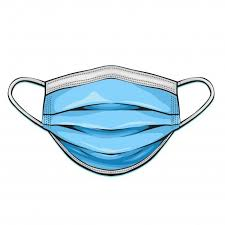
Máscaras
Jaleco fechado
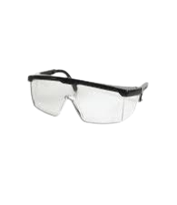
Óculos de proteção
Touca e protetor facial
Calçado fechado
Protocolos e Normas
Para garantir a segurança dos ambientes laboratoriais, é essencial o conhecimento e o cumprimento das normas e legislações vigentes. Aqui, você encontrará um resumo das normas mais importantes, para downloads.
Resultados
Os resultados obtidos mostram, de forma concreta, a importância da higienização correta e das boas práticas de biossegurança.
Locais de Coleta
As amostras foram coletadas em diferentes pontos dentro dos laboratórios, incluindo:
- Bancadas de trabalho
- Pias e torneiras
- Mesas de apoio
Principais microrganismos identificados
Entre os microrganismos identificados, estão:
- Bactérias mesófilas aeróbias
- Staphylococcus aureus
- Coliformes totais e termotolerantes
Antes e Depois
Após a aplicação de protocolos padronizados de higienização (com detergente neutro seguido de desinfecção com álcool 70% ou hipoclorito de sódio), foi observada uma redução significativa nas Unidades Formadoras de Colônia (UFC/ml) nas superfícies analisadas.
{kind=link}
{kind=link}
{kind=link}
{kind=link}
{kind=link}
{kind=link}
Galeria
Nesta galeria, você encontrará registros feitos durantes o desenvolvimento do projeto
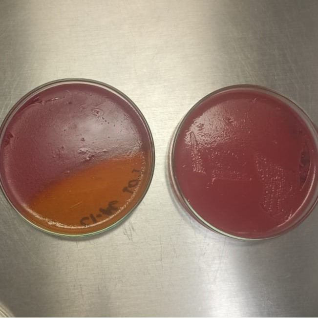
{kind=link}
Meio Ágar MacConkey
Testagem para E. coli
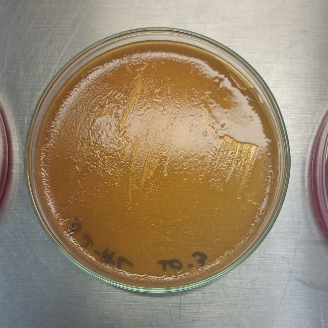
{kind=link}
Bactéria sem fermentação da lactose (BSFL)
BSFL causa coloração amarela no meio Ágar MacConkey
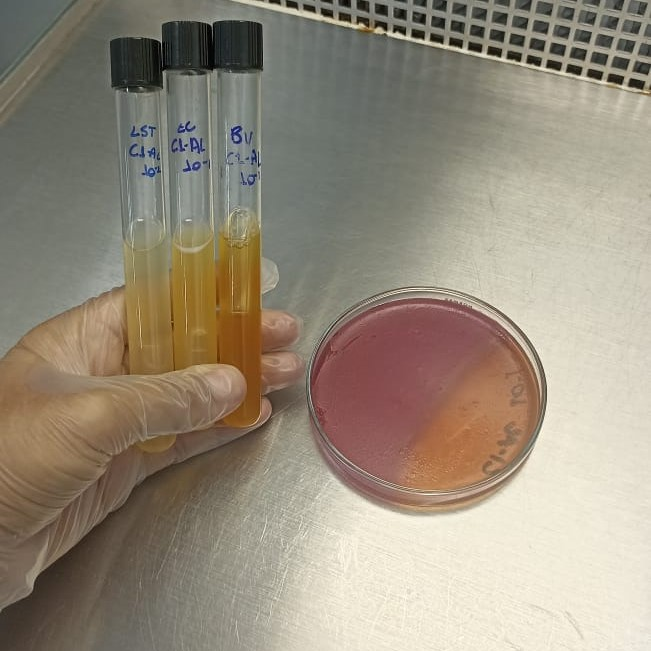
{kind=link}
Testagem de Bactérias Coliformes
Método de tubos múltiplos e presença/ausência
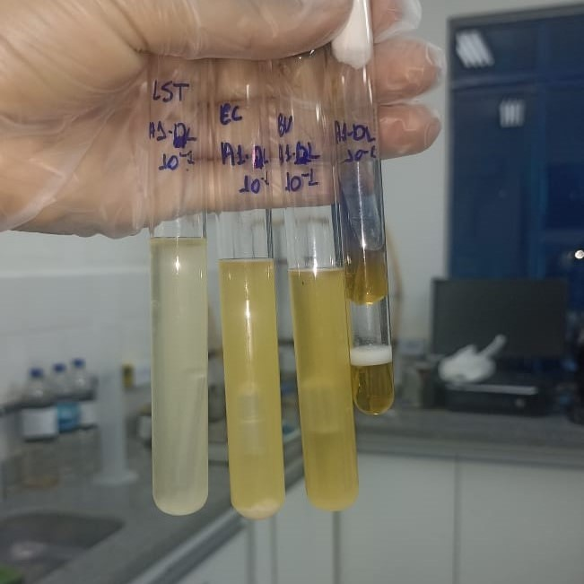
{kind=link}
Testes para Bactérias Coliformes
Testagens positivos
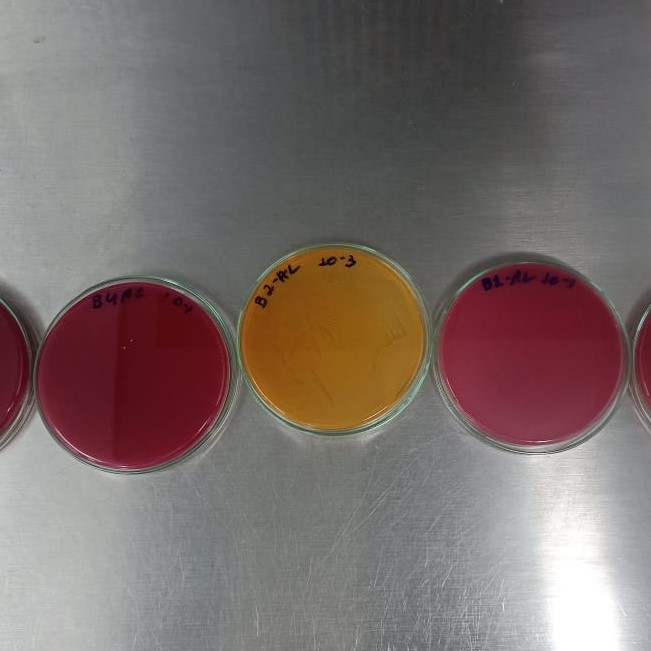
{kind=link}
Meio Ágar MacConkey
Teste para confirmação de tipos de Termotolerantes
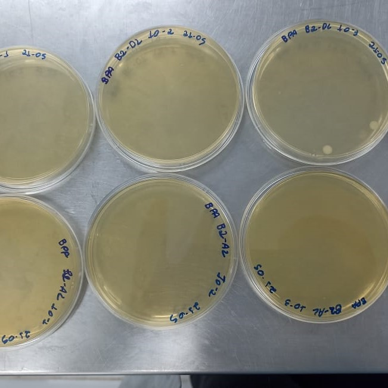
{kind=link}
Meio Ágar Baird Parker Base
Colônia de S. aureus
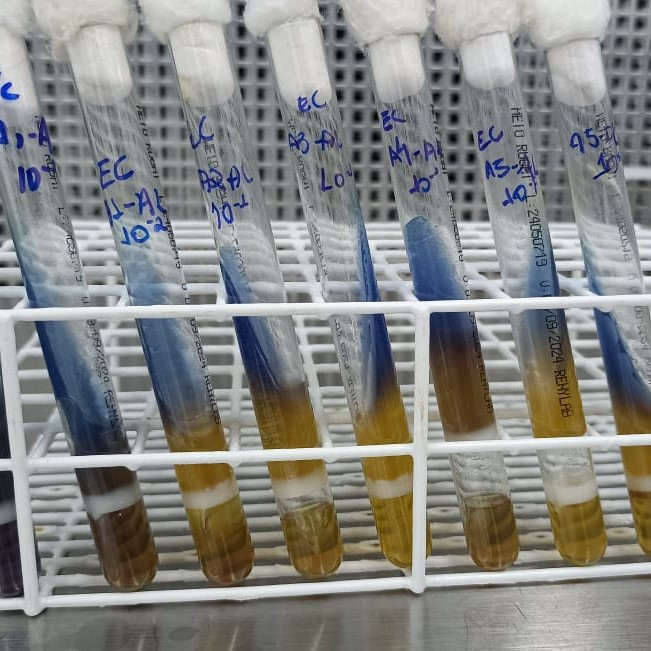
{kind=link}
Meio Rugai
Identificação de tipo de Coliformes Termotolerantes
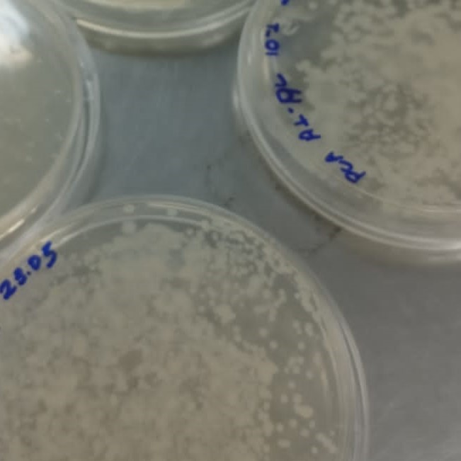
{kind=link}
Meio Plate Count Ágar
Meio de cultivo para Bactérias mesófilas
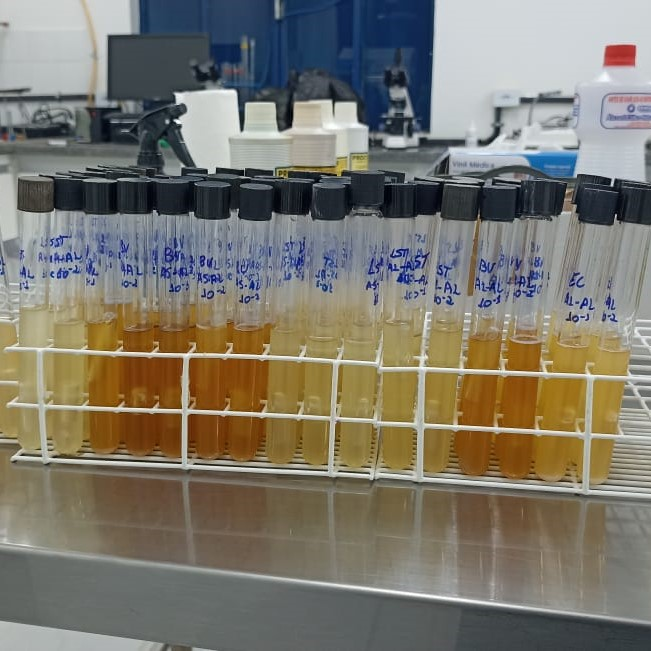
{kind=link}
Tubos múltiplos
Testagem para tipos de Coliformes
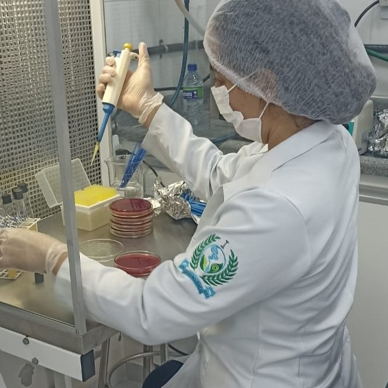
{kind=link}
EPI
Inoculando em meio Ágar MacConkey
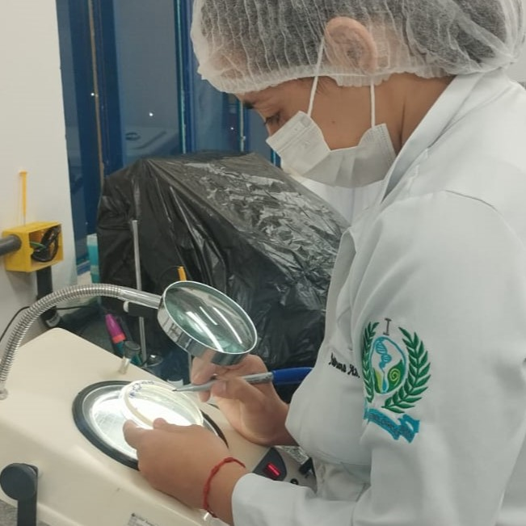
{kind=link}
Contagem
Contagem de UFC
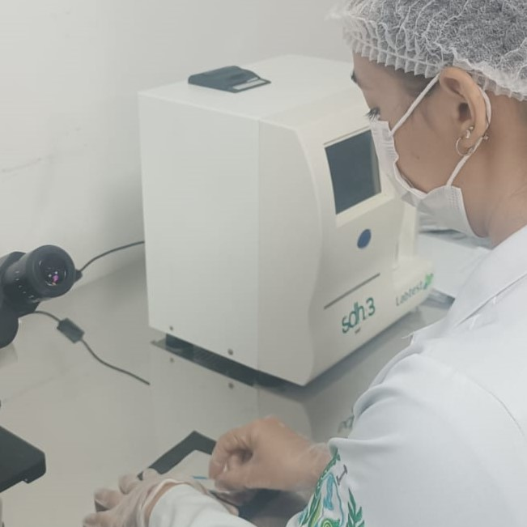
{kind=link}
Coleta
Coleta pela técnica de Swab
Apoiadores
Agradecemos aos parceiros que contribuíram para o desenvolvimento do projeto. O apoio institucional, técnico e educacional foi essencial para transformar os resultados da pesquisa em uma ferramenta acessível e de impacto social.
IF Baiano
Instituição de Ensino